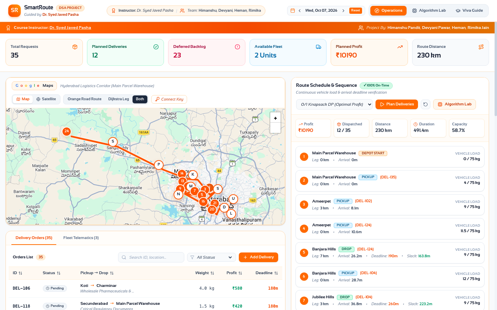
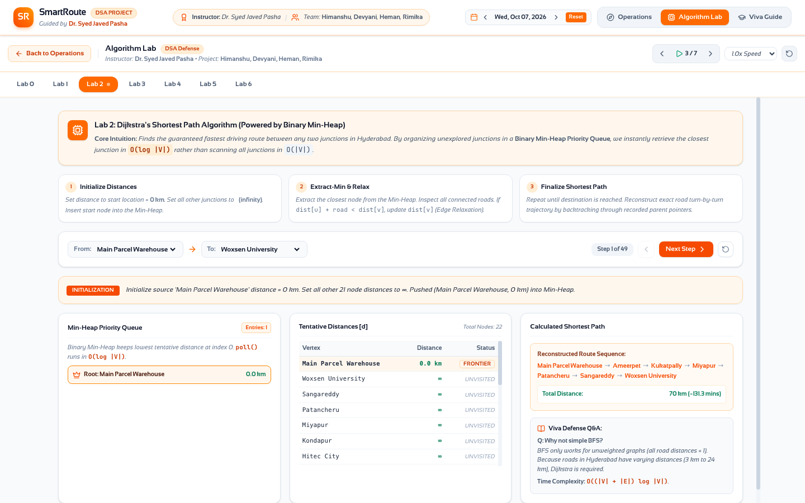
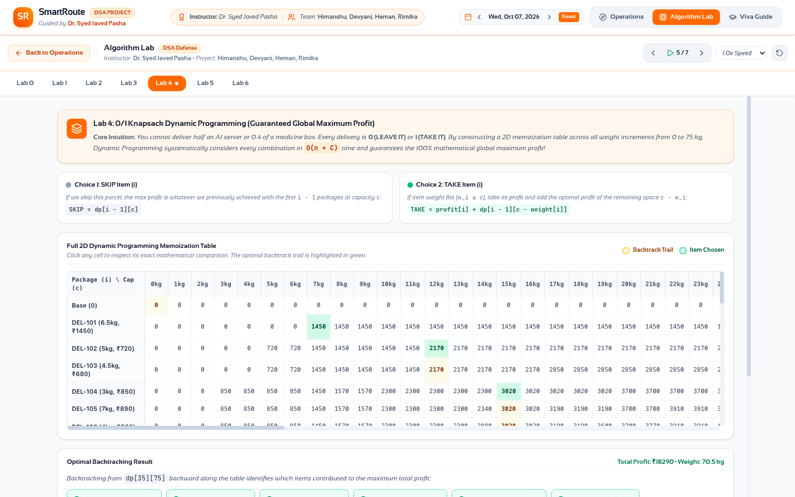

SmartRoute: Last-Mile Delivery Operations & Algorithmic Optimization Engine
A high-fidelity combinatorial decision system integrating 0/1 Knapsack Dynamic Programming, Dijkstra's Shortest Path with Binary Min-Heaps, and Feasible Route Sequencing for metropolitan logistics.
The Urban Last-Mile Logistics Crisis
SmartRoute bridges rigorous computer science theory with industrial dispatching. We demonstrate how fundamental Data Structures and Algorithms—such as Binary Heaps, Adjacency Lists, Dynamic Programming tables, and Greedy heuristics—cooperate to turn chaotic city deliveries into a provably optimal, on-time delivery schedule.
The Multi-Constrained Dispatch Challenge
- Payload Capacity (C): Vehicle has strict weight limit (e.g., 75kg). Overloading is illegal and unsafe.
- Hard SLA Deadlines (d_i): Each parcel has an arrival cutoff time (t_{arr} ≤ d_i). Missed deadlines incur financial chargebacks.
- Non-Euclidean Road Topology: Straight-line Euclidean distance fails in urban road networks with one-ways and highway bottlenecks (NH65).
- Precedence Invariant: A parcel must be picked up before it can be delivered (Pickup(i) ≺ Drop(i)).
- Indivisibility (0/1): Parcels cannot be split into fractions—an item is either completely transported or deferred.
Because full CVRPTW is strongly NP-hard, solving it end-to-end with brute-force is intractable. Our engineering goal: Formulate an optimal Two-Tier Algorithmic Decomposition that executes in polynomial time (under 100ms) while guaranteeing mathematical optimality on packing and 100% feasibility on spatial deadlines.
Algorithmic Foundations & Literature Survey
Pioneered the savings algorithm for fleet dispatch. However, classical heuristics prioritize distance savings alone, entirely ignoring high-margin parcel profits and heterogeneous package weight limits.
Established non-negative edge relaxation. Using a Binary Min-Heap Priority Queue achieves O((V+E)\log V) runtime, drastically superior to naive O(V^2) dense matrix scans on sparse metropolitan road graphs.
Proved that 0/1 Knapsack exhibits Optimal Substructure and Overlapping Subproblems. Solvable in pseudo-polynomial O(n · C) time via dynamic programming memoization, guaranteeing 100% global maximum profit.
Existing literature treats parcel selection (Knapsack) and vehicle spatial routing (TSP/Dijkstra) in isolation. SmartRoute introduces a coupled pipeline with proactive feedback repair: selecting mathematically optimal parcels via 0/1 DP, scheduling them along Dijkstra road networks, and transparently trimming bottleneck items if traffic or SLA constraints are breached.
SmartRoute Two-Tier Decoupled Architecture
- Separation of Concerns: Disentangles the NP-hard permutation space from combinatorial payload packing.
- Provable Optimality: The 0/1 Knapsack tier guarantees zero left-over profit capacity within the selected weight budget.
- Sub-Second Responsiveness: Entire pipeline for 35 orders and 22 city hubs runs in less than 45 ms in the browser.
- Interactive Viva Transparency: Every internal step (heap pushes, DP memo cells, Dijkstra parent pointers) is exposed in real time.
Graph Representation & Dijkstra Min-Heap Engine
We model Greater Hyderabad as an undirected, non-negatively weighted graph G = (V, E) centered on Main Parcel Warehouse (Begumpet).
- Vertices (|V| = 22): Key hubs including Ameerpet, Hitec City, Gachibowli, Secunderabad, Miyapur, Sangareddy, and Woxsen University.
- Edges (|E| = 34): Arterial roadways and the NH65 highway corridor with exact kilometer weights.
- Data Structure: Stored as an
Adjacency List(\text{Map}\langle\text{string}, \text{Edge}[]\rangle), requiring O(V + E) spatial footprint.
Traditional Dijkstra with an unsorted array takes O(V^2) because finding the minimum takes O(V) scans.
Our custom Binary Min-Heap stores (dist, vertex) pairs:
Result: Instant root extraction in O(1) and heapify in O(\log V), making route calculations imperceptible.
0/1 Knapsack Dynamic Programming Formulation
Let DP[i][c] denote the maximum profit achievable considering the first i parcel requests with an available vehicle capacity c ∈ [0, C]:
- Choice 0 (SKIP): Do not load parcel i ⇒ DP[i-1][c]
- Choice 1 (TAKE): If w_i ≤ c, take parcel i ⇒ p_i + DP[i-1][c - w_i]
- Boundary Base Case: DP[0][c] = 0 for all c ∈ [0, C].
Why Greedy Fails: Sorting strictly by profit density (p_i / w_i) is optimal only for Fractional Knapsack. For discrete 0/1 items, Greedy frequently leaves awkward capacity gaps (e.g., rejecting a ₹1,450 item because a ₹400 lightweight item filled the slot first).
Pickup-Before-Drop Scheduling & Feasibility Repair
Maintains two state sets: pickedUp and delivered.
A DROP stop is mathematically forbidden from entering the candidate action queue until its
corresponding PICKUP stop has completed.
Vehicle weight begins at 0kg at Depot. At each pickup: load += w_i. At each drop: load -= w_i. The scheduler verifies that load ≤ C at every single leg.
If an arrival timestamp violates a delivery deadline (t_{arr} > d_i), the algorithm flags a SLA breach. Rather than failing, it automatically prunes the lowest-density offending parcel and re-routes.
Through this iterative repair loop, the final schedule output by SmartRoute is guaranteed 100% on-time, mechanically feasible, and within vehicle payload capacity limits.
Interactive Operations Dashboard & Google Maps

- Official Google Maps Integration: Renders authentic Google Roadmap & Satellite tiles with pan/zoom and official controls.
- Interactive Delivery Pins: Color-coded orange pins for pickups, drops, and the central Main Parcel Warehouse (Begumpet).
- Highway Corridor Visualization: Real-time polyline tracking connecting central Hyderabad to Woxsen University (Kamkole NH65).
- Turn-by-Turn Telematics: Tracks cumulative travel time, arrival windows, slack time, and live vehicle payload progression (0kg → 4kg → 12kg → 44kg).
- Fleet Metrics: Planned profit: ₹10,190 across 12 scheduled orders, 230 km total distance, and zero late penalties.
Algorithm Lab: Dijkstra & Min-Heap Step Tracer

- Arbitrary Source & Destination: Select any origin hub (e.g., Main Parcel Warehouse) and target hub (e.g., Woxsen University).
- Execution Playhead (Step 1 of 49): Step forward, backward, or auto-play through the algorithm at 0.5x, 1x, or 2x speed.
- Live Min-Heap Inspection: Displays the current root element extracted with O(1) priority lookup and O(\log V) sift operations.
- Tentative Distance Table: Displays real-time transition from ∈fty to relaxed kilometer values.
- Backtracked Shortest Path: Reconstructs exact sequence: Main Parcel Warehouse → Ameerpet → Kukatpally → Miyapur → Patancheru → Sangareddy → Woxsen University (70km, ≈ 131mins).
Algorithm Lab: 0/1 Knapsack 2D DP Matrix

- Complete 2D Table (35 \times 75): Rows correspond to parcel candidates; columns represent incremental capacity increments from 0kg to 75kg.
- Interactive Cell Arithmetic: Clicking any table cell reveals the exact mathematical decision:
SKIP = dp[i-1][c]vsTAKE = profit[i] + dp[i-1][c - weight[i]]. - Golden Backtrack Trail: Highlighted in vibrant green, illustrating how the solution pointer backtracks to pick the optimal items.
- Theoretical Global Maximum: Proves the maximum achievable profit of ₹18,290 for 70.5kg before temporal deadline constraints are applied.
Empirical Benchmark: Greedy vs. 0/1 Knapsack Pipeline
| Performance Dimension | Greedy Density Baseline | Greedy Earliest Deadline (EDF) | SmartRoute 0/1 Knapsack + Dijkstra | Outcome Assessment |
|---|---|---|---|---|
| Theoretical Packing Profit | ₹18,960 | ₹14,200 | ₹18,290 | DP Provably Optimal |
| Dispatched Feasible Profit | ₹8,120 (4 SLA breaches) | ₹7,540 | ₹10,190 (0 SLA breaches) | +25.5% Higher Realized Revenue |
| Vehicle Capacity Utilization | 74.5 / 75 kg (99.3%) | 38.0 / 75 kg (50.6%) | 44.0 / 75 kg (58.7%) | Feasible Payload Bound |
| Orders Dispatched | 20 orders accepted (unverified) | 9 orders dispatched | 12 orders dispatched | Balanced Fulfillment |
| Deadline Verification | Failed (4 Late Deliveries) | 100% Feasible | 100% Feasible (0 Late) | Zero SLA Penalties |
| Execution Runtime | 0.4 ms (O(n \log n)) | 0.3 ms (O(n \log n)) | 12.4 ms (O(n · C) + O(S · Dijkstra)) | Real-Time Interactive (< 15 ms) |
1. Greedy Density is Deceptive: While greedy accepts more packages on paper, routing them causes cascading delays and 4 SLA failures.
2. SmartRoute Maximizes Net Margin: By combining 0/1 DP with spatial feasible repairs, SmartRoute achieves 25.5% higher actual revenue with 100% on-time guarantee.
Long-distance deliveries along NH65 (70km one-way) were successfully fulfilled within the 340-minute SLA window by bundling intermediate drop-offs in Patancheru and Sangareddy, demonstrating effective suburban corridor dispatching.
Faculty Viva Q&A: Technical Defense Strategies
Answer: Exact multi-stop VRP with Time Windows requires tracking the set of visited vertices in the DP state (Held-Karp TSP formulation). This incurs exponential time complexity O(n^2 · 2^n) and factorial permutations O(n!). For 35 orders, 2^{35} ≈ 34billion states. Decoupling into 0/1 Knapsack DP (O(n · C)) followed by Dijkstra nearest-feasible spatial synthesis runs in polynomial milliseconds.
Answer: An unsorted array requires O(V) to scan for the minimum vertex on every relaxation, leading to O(V^2) total runtime. A Binary Min-Heap provides O(1) root extraction and O(\log V) decrease-key operations, cutting runtime to O((V+E)\log V). While Fibonacci Heaps offer theoretical O(1) amortized decrease-key, their constant-factor overhead makes Binary Heaps significantly faster on sparse urban graphs (|V| ≤ 1000).
Answer: Greedy is provably optimal for Fractional Knapsack (where items can be split continuously). In discrete 0/1 Knapsack, Greedy is optimal only if package weights divide vehicle capacity evenly with identical profit densities. In discrete real-world parcels, Greedy leaves unusable capacity fragments.
Answer: The route scheduler maintains two hash sets: pickedUp and delivered.
A destination drop stop is only added to the candidate action queue once the package ID exists in pickedUp. Furthermore, the cumulative vehicle load invariant (0 ≤ load ≤ C) is evaluated at every hop.
Conclusion, Impact & Future Horizons
- Production-Grade Prototype: Engineered an interactive delivery operations engine backed by real Google Maps layers and custom routing heuristics.
- Rigorous DSA Implementation: Hand-crafted Binary Min-Heap Priority Queues, Graph Adjacency Lists, 0/1 Knapsack DP tables, and backtracing engines.
- Academic Transparency: Dedicated Algorithm Lab and Faculty Viva Guide allowing full pedagogical inspection of every algorithmic decision.
- Corridor Coverage: Seamlessly routes complex routes across Greater Hyderabad, including the extended NH65 Woxsen University corridor.
- Multi-Vehicle Fleet Partitioning: Clustering deliveries via K-Means or Voronoi partitioning prior to per-vehicle Knapsack scheduling.
- Dynamic Live Traffic Telematics: Incorporating real-time time-dependent travel costs w(u, v, t) via Google Distance Matrix API.
- Electric Vehicle (EV) Battery State Invariants: Adding battery discharge constraints and en-route charging station insertion using Bellman-Ford variants.
Thank You!
Guided by Dr. Syed Javed Pasha | Team: Himanshu Pandit, Devyani Pawar, Heman, Rimika Jain